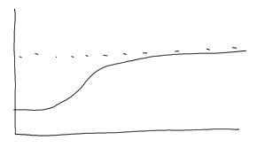

Spatial Point Processes
Terms:
- stationary — invariant under spatial translation
- isotropic — invariant under rotation
- marked point process — nonspatial data which is associated with spatial coordinates
- CSR — complete spatial randomness
Uniformity
CSR can be tested with an analysis of the nearest-neighbor distribution. This is a measure of the sum of the distances to a specified number of nearest neighbors, and should be asymptotically normal if CSR holds.
Spatial Autocorrelation
...is basically the same thing as the autocorrelation seen in time series analysis. The variance of different scales is displayed in a variogram, or usuallly a semi-variogram which divides the variances by two. For a stationary, isotropic, Gaussian process, the variogram displays an offset at 0 of \(\sigma^2\), called the nugget, which is due to variations smaller than the minimum correlation distance measured. The value the variogram approaches is called the sill.
Spatial Interpolation
is also very similar to the interpolations seen in the smoothing section. A common method used especially in geosciences is kriging, which uses least squares to estimate a response variable. Ordinary kriging estimates the response variable by summing weights of every other sampled point, and the weights are determined by the variogram of the data.
Spatial Regression
Finally, we can determine models for spatial data like we would in any regression problem. Geographically weighted regression is common in geostatistics and seeks to find the relationships between multiple variables which are location-dependent. It thus tries to find correlations between the variables as a function of location, as opposed to a global correlation. For example, how violence rates in an area are affected by alcohol outlet locations in that area.